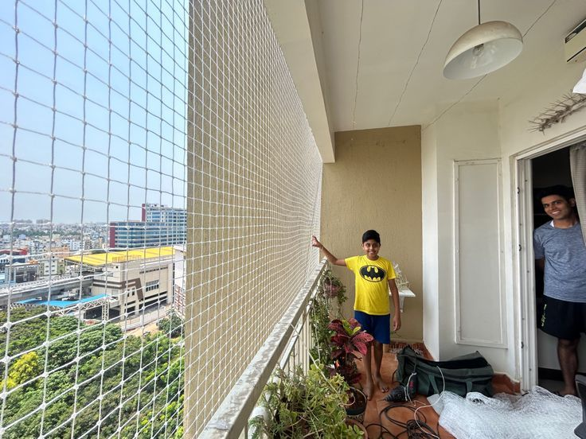
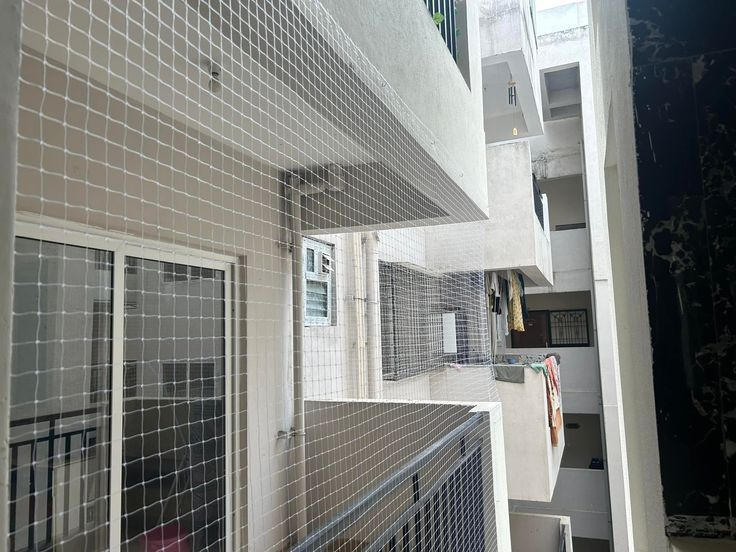
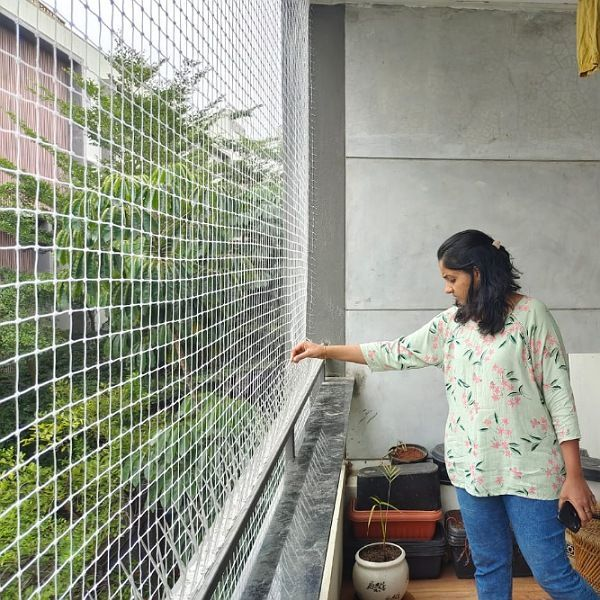
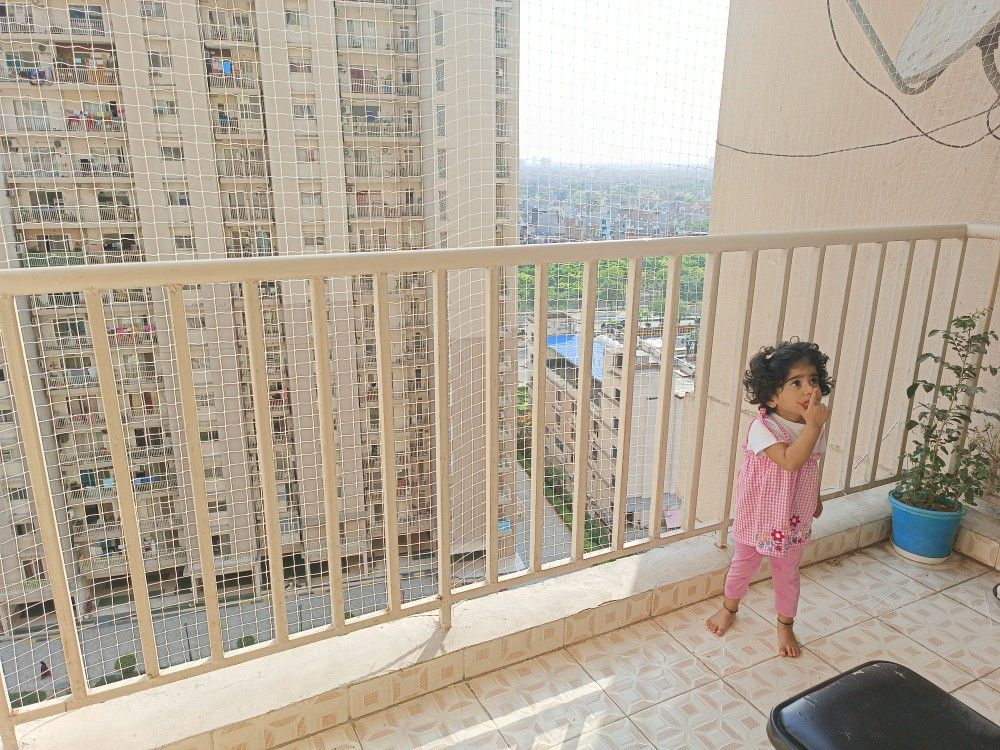

Simon Children Safety Nets provides professional Children Safety Net Installation in Ejipura for balconies, windows, staircases, terraces, utility areas, and open spaces. Our children safety nets in Ejipura are suitable for apartments, villas, independent houses, and residential buildings. If you are looking for reliable child safety nets in Ejipura, kids safety nets in Ejipura, or balcony safety nets for children in Ejipura, our team provides proper measurement, secure fitting, and professional installation according to your property requirements.
Simon Children Safety Nets offers children safety net installation in Ejipura with solutions for balconies, windows, staircases, terraces, and other open areas. We provide child protection nets, kids balcony safety nets, child safety nets for windows, and staircase safety nets with durable materials, secure installation, and a neat finish. Our service covers locations around Ejipura Main Road, Ejipura Gate, and nearby residential areas, making it convenient for customers searching for children safety nets near Ejipura and child safety nets near Ejipura.
For homes, apartments and family residences in Ejipura, our team focuses on secure fixing, clean finishing and practical child protection. We also serve nearby areas surrounding Ejipura, including Hulimavu, Bilekahalli, and Bannerghatta Road. Whether you need children safety nets for an apartment balcony, kids safety nets for windows, balcony child protection nets, or staircase safety nets in Ejipura, Simon Children Safety Nets provides professional measurement and installation. Contact us for reliable children safety nets in Ejipura and surrounding local areas based on your specific safety requirements.
Simon Children Safety Nets provides professional Children Safety Nets in Ejipura for balconies, windows, staircases, terraces, utility areas, and other open spaces. Our child safety net installation services in Ejipura are suitable for apartments, villas, independent houses, and residential buildings. We provide balcony safety nets for children, kids safety nets, window safety nets, and staircase safety nets with proper measurement, secure fitting, and a neat installation finish. Simon Children Safety Nets uses durable, UV-resistant HDPE safety nets designed for regular outdoor use while maintaining airflow, natural light, and visibility. Whether you need a child safety net for a balcony, window protection net, staircase net, or terrace safety net, our installation is planned according to the size and structure of your property. We focus on strong fitting, clean workmanship, and practical child protection for homes and apartments in Ejipura. We provide services around Ejipura Main Road, Ejipura Gate, and nearby residential pockets such as Hulimavu. If you are searching for children safety nets near Ejipura, child safety nets in Ejipura, or children safety net installation near Ejipura, Simon Children Safety Nets provides professional measurement and installation according to your balcony, window, staircase, terrace, or open-space requirements.
Professional child safety net installation with secure fixing and premium finishing.
UV-protected, weather-resistant, high-strength nets for maximum child safety and durability.

Fifteen years of precision installation. Twelve signature solutions engineered for Bengaluru homes, apartments, villas and industrial spaces.


Simon Children Safety Nets provides professional children safety net installation in Ejipura for apartments, balconies, windows, staircases, terraces, and open areas. We understand that every home has different safety requirements, so our team carefully checks the available space, takes accurate measurements, and installs the safety net with a secure and neat finish. Our services are available for families looking for reliable children safety nets in Ejipura, child safety nets, and kids safety nets.
Our safety solutions use durable, UV-resistant high-tensile safety netting designed for regular outdoor use. Whether you need protection for an apartment balcony, window opening, staircase, terrace, or another open area, Simon Children Safety Nets focuses on proper fitting, practical protection, airflow, visibility, and a clean appearance. We serve customers around Ejipura Main Road, Ejipura Gate, and nearby residential pockets such as Hulimavu, providing professional installation based on the requirements of each property.

Projects Completed
Customer Satisfaction
Professional Services
Support Available
A curated look at recent safety net projects across Bengaluru — from balconies to industrial roofs.




Simon Children Safety Nets provides reliable children safety net installation in Ejipura for families looking to improve safety around balconies, windows, staircases, terraces, and open areas. We understand that every property has different dimensions and installation requirements, which is why our team focuses on accurate measurement, suitable net selection, secure fixing, and a clean finished installation. Our service is suitable for apartments, villas, independent houses, and residential buildings in Ejipura.
We use durable UV-resistant high-tensile safety nets designed for regular outdoor use and suitable for child protection applications. From balcony safety nets for children and kids balcony nets to window safety nets and staircase safety nets, each installation is planned according to the structure and coverage required. Our goal is to provide a practical protective barrier while maintaining airflow, visibility, natural light, and a neat appearance around your home.
Simon Children Safety Nets serves customers around Ejipura Main Road, Ejipura Gate, and nearby residential areas such as Hulimavu. Before installation, our technicians assess the location and recommend an appropriate solution based on the balcony, window, staircase, terrace, or open-space requirement. If you are searching for children safety nets in Ejipura, child safety nets near Ejipura, or children safety net installation near Ejipura, our team provides professional local service with attention to fitting quality and workmanship.